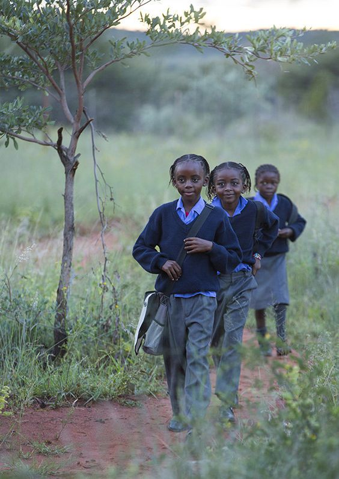
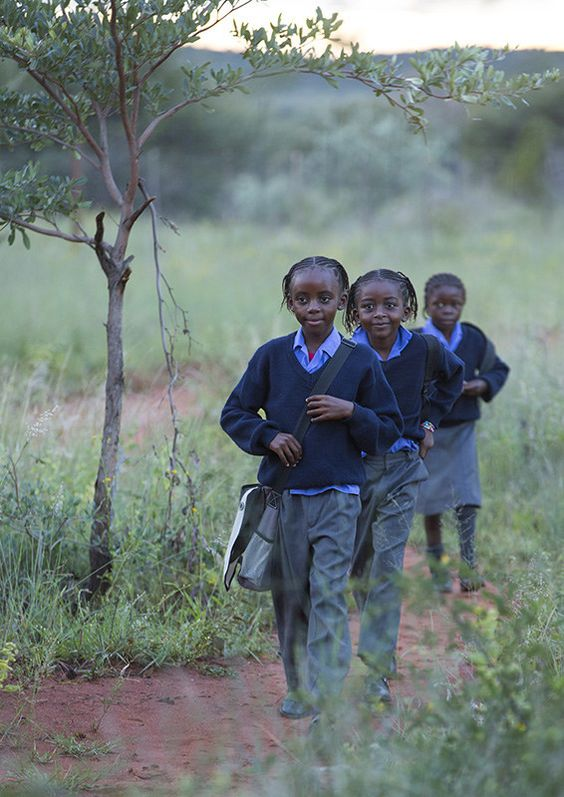

About Vukani Makhosikazi
The Vukani Makhosikazi Community Project is a transformative initiative dedicated to empowering and
uplifting women in the Vukani community.
By addressing the unique challenges faced by women, the project aims to create a positive and inclusive environment where women can thrive.
By promoting gender equality, advocating for women's rights, and fostering a supportive network, the project strive to break down cultural barriers and empower to overcome socio-ecconomic challenges.
Community projects like these often aim to address various aspects such a education, healthcare, economic opportunities, and social support for women.
They may offer programs and initiatives to enhance women's skills, promote entrepreneurship, advocate for gender equality, provide access to
healthcare services, and create a supportive network for women.
Challenges
The Vukani Makhosikazi Community Project faces several challenges like:
Limited Resources: insufficient funding and limited resources may restrict the project's ability to provide comprehensive training programs and support services to a larger number of women in the community
It is very hard to reach their objectives and goals with the little to no funding that they have. One of the most devastating moments was not being able to chnage the situation when they would love to do so because of not having enough resources.
For anyone who is interested in making donation or have any queries about the organization you can find the contact details below the page.
 
